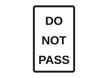

School bus stop distance and barriers Stop at least 10 feet from a bus flashing red with its arm out. You do not need to stop on a separate roadway divided by a physical barrier when traveling in the opposite direction. (Chapter 3: Learning to Drive, School Buses)
Practice hours include night and poor weather Applicants under 18 must complete 65 practice hours with at least 10 at night and five in poor weather. (Chapter 1: Non-Commercial Learner's Permit Information)
Who can supervise a learner A licensed supervisor ordinarily must be at least 21, but the listed parent, guardian, person in loco parentis or spouse exception starts at 18. (Chapter 1: Non-Commercial Learner's Permit Information)
Headlights in signed work zones Use your headlights as required through posted work zones. Daytime running lights are not a substitute. (Chapter 3: Learning to Drive, Work Zones)
Learner nighttime supervision Between 11 p.m. and 5 a.m. a learner needs a parent, guardian, person in loco parentis or spouse who meets the licensing and age requirement. (Chapter 1: Non-Commercial Learner's Permit Information)
Practice Pennsylvania rules
Say what you would do before opening the answer. If you miss a scenario, review the named section in the handbook before trying the second example.
1. You follow a school bus and it activates red lights and extends its arm. Is stopping five feet behind it enough?
Answer: No. Stop at least 10 feet back.
Stop at least 10 feet from a bus flashing red with its arm out. You do not need to stop on a separate roadway divided by a physical barrier when traveling in the opposite direction.
Manual: Chapter 3: Learning to Drive, School Buses
2. The red lights are on and you are opposite the bus across a painted turn lane. Does the paint exempt you from stopping?
Answer: No. A painted lane is not a physical barrier.
Stop at least 10 feet from a bus flashing red with its arm out. You do not need to stop on a separate roadway divided by a physical barrier when traveling in the opposite direction.
Manual: Chapter 3: Learning to Drive, School Buses
3. You've logged 65 hours, including the nighttime minimum but no bad-weather practice. Is the log ready?
Answer: No. The poor-weather hours are a separate requirement.
Applicants under 18 must complete 65 practice hours with at least 10 at night and five in poor weather.
Manual: Chapter 1: Non-Commercial Learner's Permit Information
4. There are 65 hours, five in poor weather, but only nine at night. What do you add?
Answer: At least one more nighttime hour.
Applicants under 18 must complete 65 practice hours with at least 10 at night and five in poor weather.
Manual: Chapter 1: Non-Commercial Learner's Permit Information
5. Your 20-year-old licensed cousin is not your guardian. Can they be your only supervisor?
Answer: No. They are under 21 and do not fit a listed exception.
A licensed supervisor ordinarily must be at least 21, but the listed parent, guardian, person in loco parentis or spouse exception starts at 18.
Manual: Chapter 1: Non-Commercial Learner's Permit Information
6. Can your 20-year-old licensed spouse meet the supervisor age requirement?
Answer: Yes. A licensed spouse can qualify from age 18.
A licensed supervisor ordinarily must be at least 21, but the listed parent, guardian, person in loco parentis or spouse exception starts at 18.
Manual: Chapter 1: Non-Commercial Learner's Permit Information
7. You enter a signed active work zone on a bright day. Are daytime running lights enough?
Answer: No. Use your headlights.
Use your headlights as required through posted work zones. Daytime running lights are not a substitute.
Manual: Chapter 3: Learning to Drive, Work Zones
8. Cars around you have not switched their lights on in a signed work zone. Does that change your obligation?
Answer: No. Turn on your headlights.
Use your headlights as required through posted work zones. Daytime running lights are not a substitute.
Manual: Chapter 3: Learning to Drive, Work Zones
9. Your 23-year-old friend usually supervises you. Can they be your only supervisor at midnight?
Answer: No. The learner nighttime rule is narrower.
Between 11 p.m. and 5 a.m. a learner needs a parent, guardian, person in loco parentis or spouse who meets the licensing and age requirement.
Manual: Chapter 1: Non-Commercial Learner's Permit Information
10. At 4:30 a.m., can a qualifying licensed parent supervise instead?
Answer: Yes, if the parent meets the stated requirements.
Between 11 p.m. and 5 a.m. a learner needs a parent, guardian, person in loco parentis or spouse who meets the licensing and age requirement.
Manual: Chapter 1: Non-Commercial Learner's Permit Information
Road sign self-check
Cue
First read
Red octagon
Stop and check the intersection.
Yellow diamond
Look for the warning and prepare for the condition.
11. For Pennsylvania practice, this sign warns drivers to watch for:
Answer: People crossing the roadway
Pedestrian crossing signs tell drivers to look carefully and be ready to yield. This page uses original artwork; verify final rules in the Pennsylvania Driver's Manual.
Manual: Chapter 2: Signs, Signals and Pavement Markings
12. What road situation does this sign warn about?
Answer: Traffic streams will join together
Merge signs warn that vehicles from another lane or ramp will join your lane. This page uses original artwork; verify final rules in the Pennsylvania Driver's Manual.
Manual: Chapter 2: Signs, Signals and Pavement Markings
13. This sign means:
Answer: A lane will end or narrow ahead
Lane Ends signs warn you to prepare for a lane reduction and merge safely. This page uses original artwork; verify final rules in the Pennsylvania Driver's Manual.
Manual: Chapter 2: Signs, Signals and Pavement Markings
14. For Pennsylvania practice, what hazard does this sign warn about?
Answer: Slippery road surface when wet
Slippery road signs warn that traction may be reduced, especially when wet. This page uses original artwork; verify final rules in the Pennsylvania Driver's Manual.
Manual: Chapter 2: Signs, Signals and Pavement Markings
15. This sign marks or warns of:
Answer: A railroad crossing
Railroad crossing signs warn drivers to look, listen, and never stop on tracks. This page uses original artwork; verify final rules in the Pennsylvania Driver's Manual.
Manual: Chapter 2: Signs, Signals and Pavement Markings
16. What does this orange sign usually mean?
Answer: Road work or temporary traffic control
Orange signs usually mark construction, maintenance, or temporary traffic patterns. This page uses original artwork; verify final rules in the Pennsylvania Driver's Manual.
Manual: Chapter 2: Signs, Signals and Pavement Markings
17. For Pennsylvania practice, this sign warns that ahead there is:
Answer: A traffic signal
Signal Ahead signs warn drivers to prepare for a traffic light. This page uses original artwork; verify final rules in the Pennsylvania Driver's Manual.
Manual: Chapter 2: Signs, Signals and Pavement Markings
18. What does this sign warn about?
Answer: A divided roadway or median begins
The upward arrow on the right bends outward beside the divider shown at the top. A physical median will separate traffic ahead. Check the Pennsylvania Driver's Manual for local rules.
Manual: Chapter 2: Signs, Signals and Pavement Markings

19. This sign means drivers should not:
Answer: Pass other vehicles in this zone
This white regulatory sign means do not pass the car ahead even if the road looks clear. A yellow NO PASSING ZONE pennant can mark the start of the zone on the left; its absence does not cancel the restriction.
Manual: Chapter 2: Signs, Signals and Pavement Markings
20. For Pennsylvania practice, this sign warns drivers about:
Answer: A circular intersection ahead
Roundabout signs warn drivers to slow, yield to circulating traffic, and follow the circle. This page uses original artwork; verify final rules in the Pennsylvania Driver's Manual.
Manual: Chapter 2: Signs, Signals and Pavement Markings
Compare these two original road diagrams. The bus is stopped with red lights flashing and its stop arm out in both. These cases are separate from the 20-question sign score.
On road A, you are approaching the bus from the opposite direction. Does the double yellow line mean you can keep going?
No. Painted lines do not make separate roadways. Drivers in both directions must stop. The minimum distance before reaching the bus is 10 feet through October 21, 2027; under Act 89 it becomes 15 feet on October 22, 2027. Wait for the red lights to stop flashing, the arm to retract, and children to reach safety.
On road B, a concrete median separates the directions. Who may proceed cautiously: the driver behind the bus or the driver on the opposite roadway?
Only the driver on the opposite roadway may proceed without stopping for the bus. Slow down and be alert. The driver behind the bus is on the same roadway and must stop. More lanes alone do not create the exception.
Before either red-light scene, the bus is still moving on road A and begins flashing amber lights. What should you do?
Slow down and be ready to stop. Amber warns that the bus is preparing to stop; it is not a signal to speed up or squeeze past.
Pennsylvania: when two one-way streets meet at a red light
Practice deciding when a turn is permitted, not just reading the arrow on a sign. These examples use a steady circular red light and do not affect your quiz score.
One-way street to one-way street
You are in the left lane of a one-way street in Pennsylvania, facing a round red light. The crossing street is one-way to your left and no sign forbids the turn. May you turn left?
Show reasoning
Stop completely at the marked line, or before the crosswalk or intersection if there is no line.
Check both streets. Both are one-way and the turn follows the posted direction. Pennsylvania allows that left turn on red unless signed otherwise.
Yield to pedestrians and other traffic. Turn only when you have a safe opening.
A ONE WAY sign tells you where traffic moves. It does not cancel the red light or give you priority over someone already crossing.
Only the street you want to enter is one-way. Does the same left-turn exception apply?
Check
No. Both streets must be one-way for this exception. Stay stopped until a signal allows the turn.
In the same Pennsylvania layout you see a NO TURN ON RED sign above the signal. The crosswalk and intersection look empty. Can you turn left after stopping?
Show reasoning
No. The posted sign blocks the red-light turn even though both streets are one-way.
Wait until the signal permits the turn.
Check for pedestrians and conflicting traffic before you move.
An empty intersection is not an exception to a posted turn restriction.
The sign is absent, but a cyclist is approaching on the crossing street with the right of way. Can you turn in front of them?
Check
Not if the turn would conflict. The absence of a sign does not remove your duty to yield; wait for a safe gap.